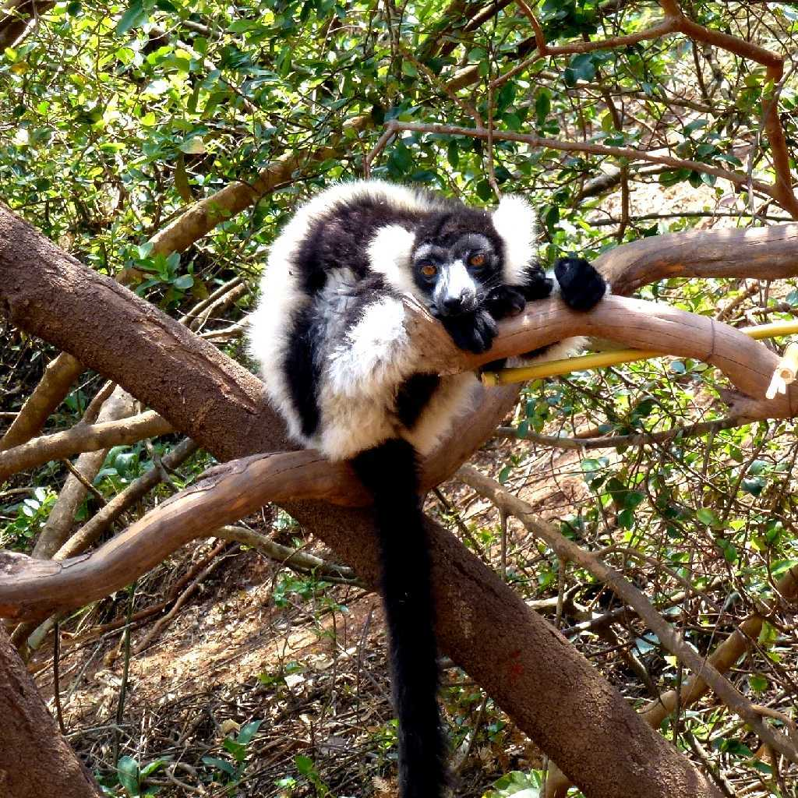
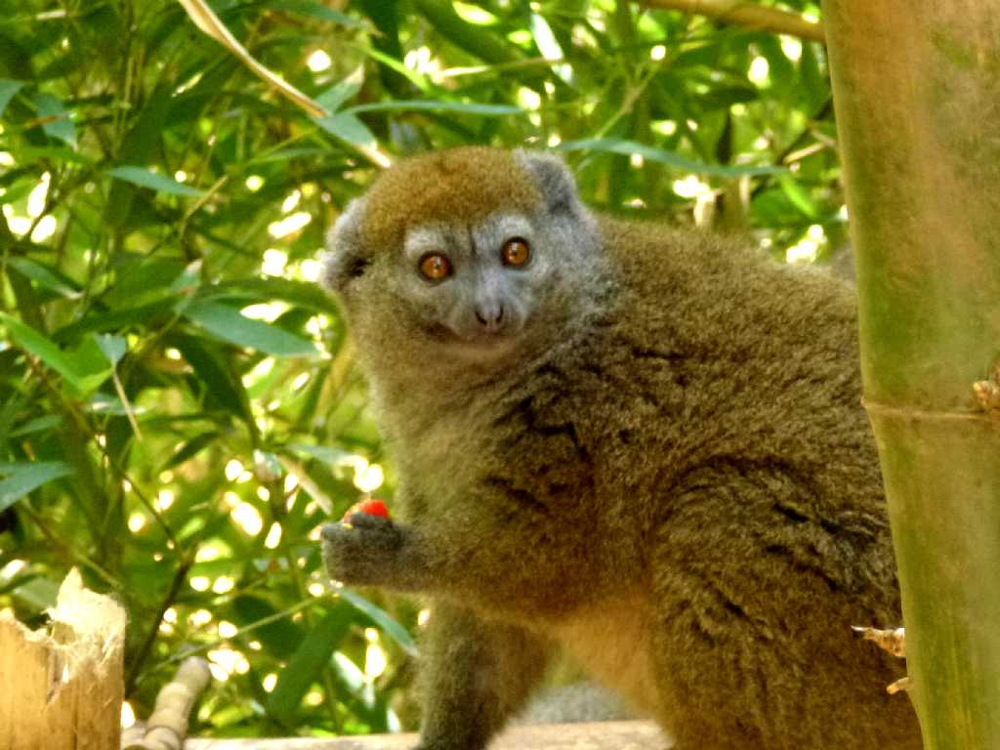
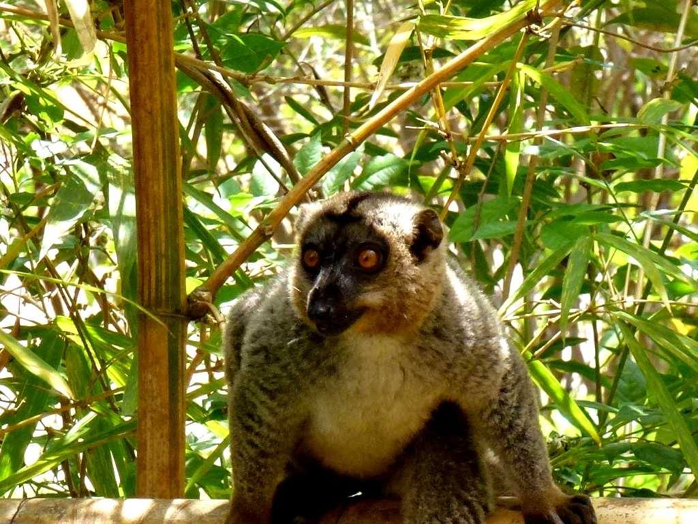
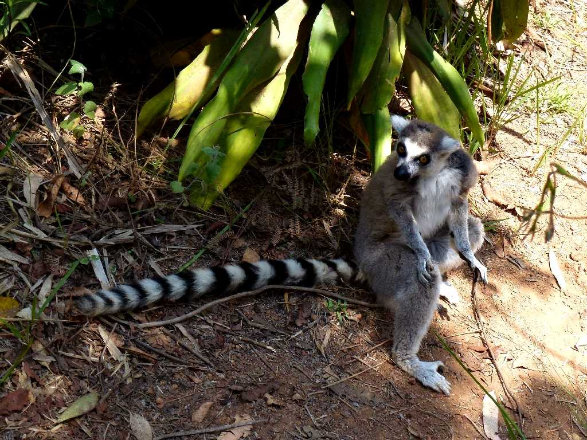
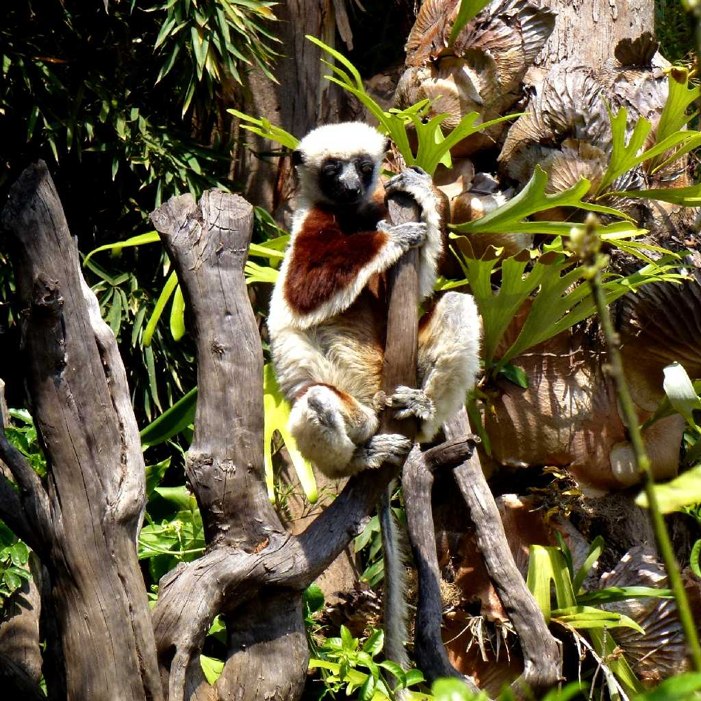
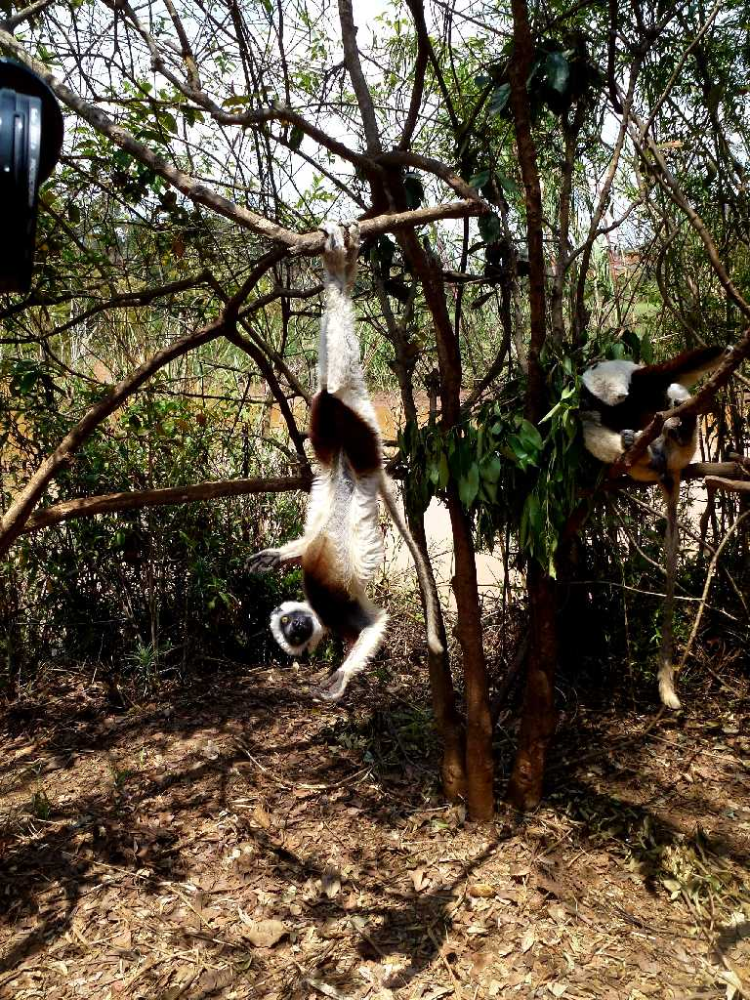

Ruffed Lemur Lemurs Park
アンタナナリボ郊外のレムールパークのエリマキキツネザル 哺乳類猿目キツネザル下目キツネザル科エリマキキツネザル属

Bamboo Lemur
竹の葉を食べて暮らすタケキツネザル 哺乳類猿目キツネザル下目キツネザル科ジェントルキツネザル属

Brown Lemur
チャイロキツネザル 哺乳類猿目キツネザル下目キツネザル科キツネザル属

Ring-tailed Lemur
ワオキツネザル 哺乳類猿目キツネザル下目キツネザル科ワオキツネザル属

Coquerel's Sifaka
ベローシファカの亜種コクレルシファカ 哺乳類猿目キツネザル下目インドリ科シファカ属

Coquerel's Sifaka
哺乳類猿目キツネザル下目は全てマダガスカルの固有種 インドリ科キツネザル科イタチキツネザル科コビトキツネザル科等に分類される